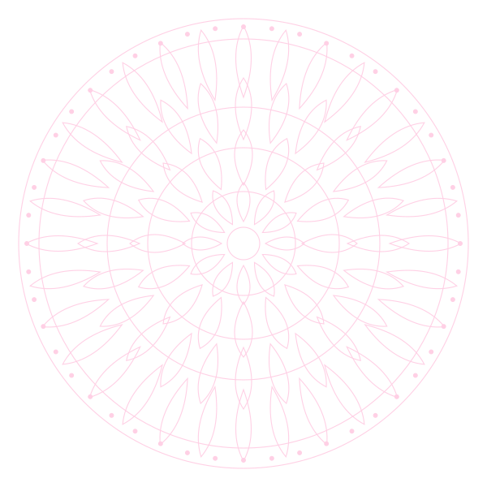
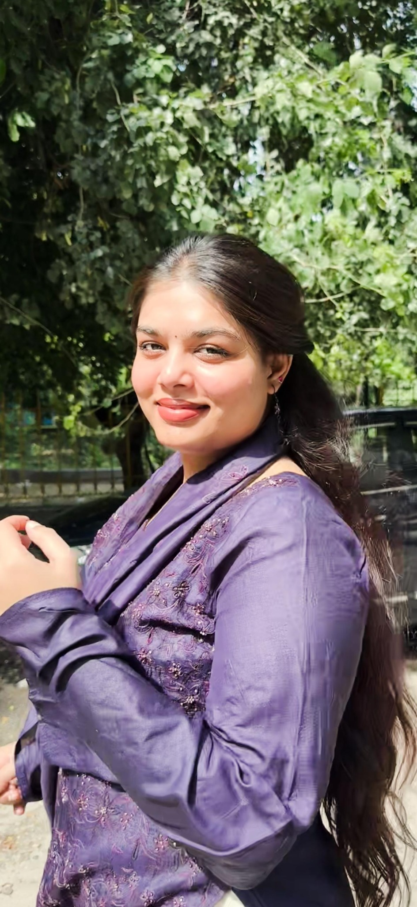

A space for unheard voices.
Independent ideas. Feminist inquiry. A conversation that keeps growing.


Not a quiet corner.
A pink rebellion.
Gulabi Bagawat is envisioned as an independent platform for rigorous but accessible political inquiry. We believe compelling ideas can come from emerging scholars, young writers and engaged citizens—not only established institutions.
Our feminist lens asks who holds power, whose knowledge counts and which voices are left outside the room. We welcome careful research, principled debate and interdisciplinary inquiry across political science, history, sociology and international relations.
Meet the contributors.
An emerging collective of curious minds. We begin with one contributor and leave the door open for more.

Soumya Sharma
Writer & emerging researcher
Read three essays on women’s freedom, student dissent and human rights in the archive.Your perspective
belongs here.
Have writing that reflects our values of feminism, equality, dignity and thoughtful inquiry? Email your article or essay for editorial consideration.
Email your writing ↗Your words.
Our next conversation.
If you would like to publish an article, essay, research piece or other writing that aligns with our values, we would love to hear from you.
We welcome feminist perspectives, a commitment to equality and dignity, thoughtful debate, and careful, evidence-based inquiry. Email your writing with your name and a short introduction to the piece for editorial consideration.
Email your writing Submissions are reviewed for relevance and editorial fit.